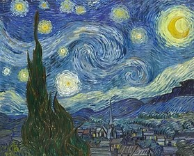

SICARIO
Film Rescoring
SICARIO: video
I rescored a tense scene from Sicario. The challenge was to create an effective score for a sequence with very little dialogue and minimal sound. I used dark sound design and ambient textures to build tension while preserving the scene’s sense of restraint and suspense.
Why You Should NEVER Take a Break
Film Rescoring
Why You Should NEVER Take a Break: video
In my Music Creation course, I composed and produced an original score for a short film of my choice. I selected this video for its dramatic tone, which guided my approach to creating an orchestral soundtrack that complemented its mood and atmosphere.
The Starry Night

For this project, I composed an original soundtrack inspired by The Starry Night by Vincent van Gogh. The goal was to translate the painting’s visual atmosphere and emotional impact into music, exploring the relationship between sound and imagery.